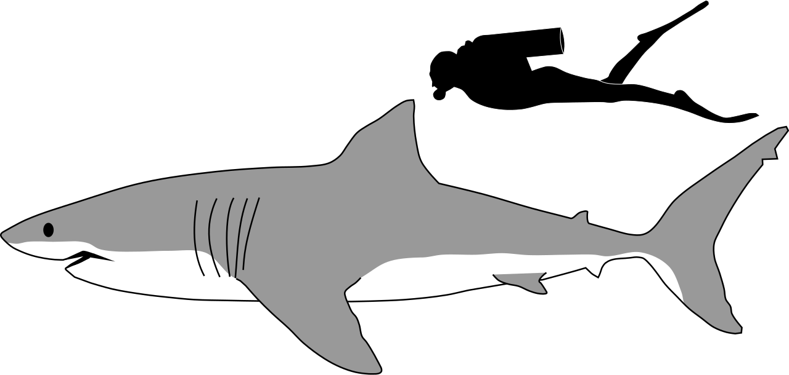

The great white shark is the world's largest predatory fish, found in cool coastal and offshore waters across the globe. Despite their fearsome reputation, attacks on humans are rare and typically cases of mistaken identity — they strongly prefer fat-rich marine mammals over people.
